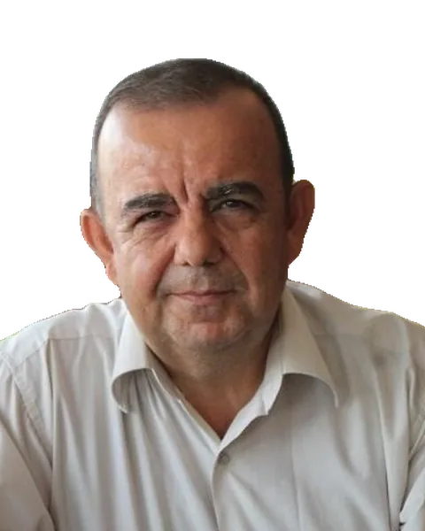

Çanakkale'nin Pusulası
25 yıllık il verisi, sorun alanları, 2035 projeksiyonları ve 25 politika paketi.
Ekonomist · Çanakkale
Kamu kaynağının nereye gittiğini ve şehirleri nasıl değiştirdiğini ölçüyorum.
Otuz yılı aşkın süredir maliye politikası, bölgesel kalkınma, sivil toplum ve kamu–özel sektör ortaklıkları üzerine çalışıyorum. Bu sayfada yayınlarım, editörlüklerim ve derslerim yer alıyor.

Yakında
Ekonominin gündelik hayattaki karşılığını tablosuz, grafiksiz anlatan yarı akademik bir kitap.
askonomi.com →25 yıllık il verisi, sorun alanları, 2035 projeksiyonları ve 25 politika paketi.
Aynı veriden yola çıkıp büyüyen bir kentin insanlara ne yaptığını anlatan edebî bir okuma.
Son yayınlar
Özgeçmiş
1967'de Gaziantep'te doğdu. Lisans, yüksek lisans ve doktora eğitimini Anadolu Üniversitesi'nde tamamladı. 1994'te Dumlupınar Üniversitesi'nde araştırma görevlisi olarak başladığı akademik kariyerini 1998'den bu yana Çanakkale Onsekiz Mart Üniversitesi'nde sürdürüyor. Bölüm başkanlığı, dekan yardımcılığı, enstitü müdürlüğü ve rektör danışmanlığı görevlerinde bulundu. 2016'da Rating Academy adıyla kurulan, bugün Holistence Academy olarak devam eden şirketin kurucu ortağıdır.
Tez: Uluslararası ekonomik kuruluşların küreselleşme sürecindeki rolü (Türkiye örneği)
Tez: Bölgesel dengesizlikleri giderici maliye politikaları ve Türkiye uygulamaları
Araştırmalar
Yatırım teşvikleri, bölgesel istihdam ve turizm politikasının shift-share analizi; il düzeyinde gelir ayrışması, ihracat ve girişimcilik.
Altyapı yatırımları için mali alan, kentsel dönüşüm, şebeke suyu ve yerel hizmetlerde ortaklık modelleri.
Sivil toplum kuruluşlarının devlet tarafından finansmanı, neoliberalizmle ilişkisi ve kriz dönemlerindeki rolü.
Otomatik stabilizatörler, kamu harcamaları ile makro değişkenler arasındaki nedensellik, mali demokrasi ve vatandaş bütçesi.
Nüfus yaşlanması, sağlık altyapısı ve büyüme ilişkisi; il panelinde doğurganlık dinamikleri.
Yayınlar
Editörlükler
Holistence Publications
Holistence Publications
Dersler
Her ders 14 haftalık çalışma sayfasından oluşur: konu anlatımı, etkileşimli öğeler ve öz-değerlendirme testi. Tüm dersler →
İletişim
mehmetsahin@comu.edu.trÇanakkale Onsekiz Mart Üniversitesi, Çanakkale